Handbuch für Mitglieder, Super-Mitglieder und Gäste
Der SportAbo Manager verwaltet wiederkehrende Sporttermine — zum Beispiel einen Beachvolleyballplatz, der für eine ganze Saison gebucht ist. Die App beantwortet zwei Fragen: Wer kommt zu welchem Termin? und Wer schuldet wem wie viel Geld?
Die App rechnet nicht mit einem festen Preis pro Termin, sondern teilt tatsächliche Kosten. Das läuft in zwei Schritten:
Beim Anlegen des Abos wird ein Gesamtpreis für die ganze Laufzeit hinterlegt — also das, was die Platzmiete für die komplette Saison kostet. Dieser Betrag wird gleichmäßig auf alle noch offenen Termine verteilt. Bei 480 € Saisonmiete und 8 Terminen trägt jeder Termin ein Budget von 60 €.
Nach dem Termin wird das Budget durch die Zahl der tatsächlichen Teilnehmer geteilt. Bei 60 € Budget und 6 Leuten zahlt jeder 10 €; kommen 8 Leute, sind es nur noch 7,50 €.
Ein Abo hat zwei Gesamtpreise: den Abo-Preis für Mitglieder und den höheren Normalpreis für Gäste. Beide werden auf dieselbe Weise auf die Termine und die Teilnehmer verteilt. Mitglieder zahlen also den Anteil am Abo-Preis, Gäste den Anteil am Normalpreis — beide geteilt durch dieselbe Teilnehmerzahl.
Jedes Abo hat eine Mindestteilnehmerzahl. Wird sie nicht erreicht, findet der Termin nicht statt und kann auch nicht abgerechnet werden — statt einer teuren Abrechnung auf wenige Schultern wird der Termin abgesagt.
Jedes Mitglied hat ein Guthabenkonto. Einzahlungen erhöhen es, abgerechnete Termine belasten es. Rutscht dein Guthaben ins Minus, zeigt die App dir oben einen Hinweis mit der PayPal-Adresse, an die du zahlen sollst.
Abos legt der Administrator an. Damit er das kann, braucht er von dir die folgenden Angaben. Am besten schickst du sie ihm als komplette Liste.
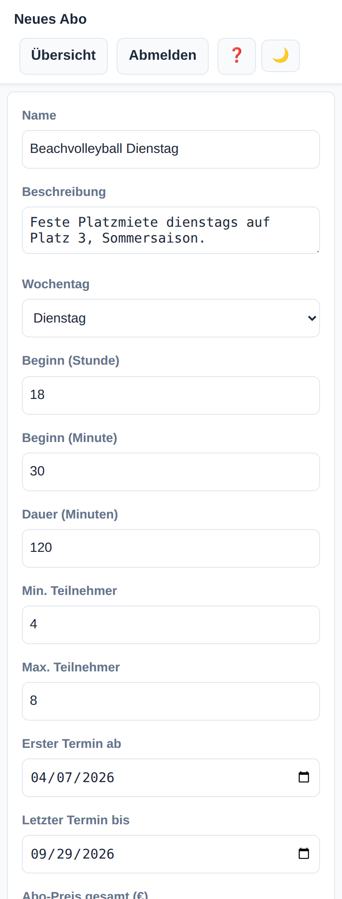
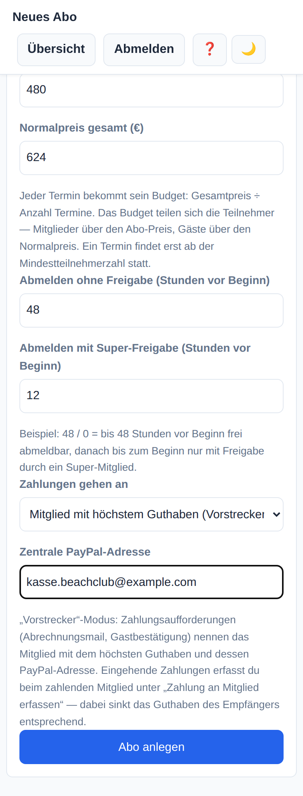
| Feld | Was du melden musst | Beispiel |
|---|---|---|
| Name | Wie das Abo in der App und in allen E-Mails heißen soll. | Beachvolleyball Dienstag |
| Beschreibung | Optional. Platz, Ort, Besonderheiten — steht auf der Abo-Seite. | Platz 3, Sommersaison |
| Wochentag | An welchem Wochentag die Termine liegen. Ein Abo hat genau einen Wochentag. | Dienstag |
| Beginn | Uhrzeit als Stunde und Minute. | 18:30 |
| Dauer | Länge eines Termins in Minuten. Daraus errechnet die App das Ende. | 120 |
| Min. Teilnehmer | Ab wie vielen Leuten der Termin stattfindet. Darunter wird abgesagt statt abgerechnet. | 4 |
| Max. Teilnehmer | Wie viele Plätze es gibt. Mitglieder und deren Gäste und Link-Gäste zählen mit. | 8 |
| Erster Termin ab | Startdatum des Zeitraums. Die App erzeugt alle Termine dieses Wochentags darin. | 07.04.2026 |
| Letzter Termin bis | Enddatum des Zeitraums. | 29.09.2026 |
| Abo-Preis gesamt | Gesamtkosten für die ganze Laufzeit, die Mitglieder tragen — nicht pro Termin! | 480,00 € |
| Normalpreis gesamt | Dasselbe für Gäste, üblicherweise höher. | 624,00 € |
| Abmelden ohne Freigabe | Bis wie viele Stunden vor Beginn man sich frei abmelden darf. | 48 |
| Abmelden mit Freigabe | Bis wie viele Stunden vorher eine Abmeldung noch möglich ist, aber ein Super-Mitglied zustimmen muss. 0 = bis zum Beginn. | 12 |
| Zahlungen gehen an | Entweder eine zentrale Kasse oder das Mitglied, das das Geld ausgelegt hat („Vorstrecker“, siehe unten). | Vorstrecker |
| PayPal-Adresse | Die zentrale Adresse. Wird auch als Rückfallebene benutzt, wenn im Vorstrecker-Modus kein Mitglied infrage kommt. | kasse@example.com |
Das Feld „Zahlungen gehen an“ entscheidet, wen die App als Zahlungsziel nennt — in Abrechnungsmails, auf der Gastbestätigung und im Minus-Hinweis:
Nach dem Anlegen erzeugt der Admin mit einem Klick alle Termine des Zeitraums. Danach trägt er die Mitglieder ein.
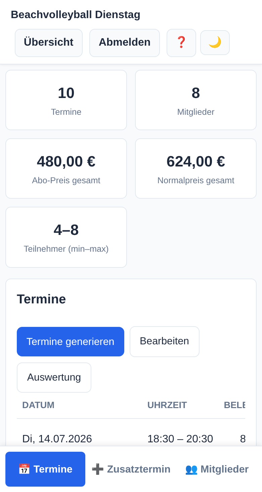
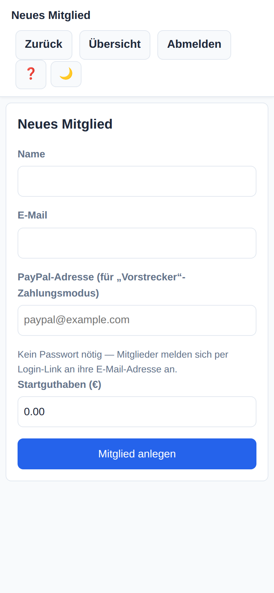
Pro Mitglied braucht der Admin: Name, E-Mail (das ist gleichzeitig der Login), optional eine PayPal-Adresse (nötig, wenn diese Person als Vorstrecker infrage kommen soll), ein Startguthaben und die Angabe, ob die Person Super-Mitglied sein soll.
Auf ihr sieht der Admin die vollständige Preisstaffel, den Gastlink zum Weitergeben und alle Anmeldungen.
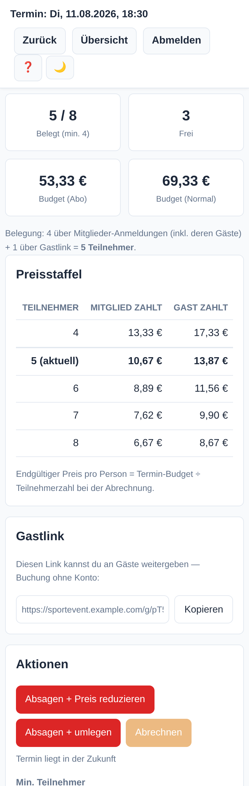
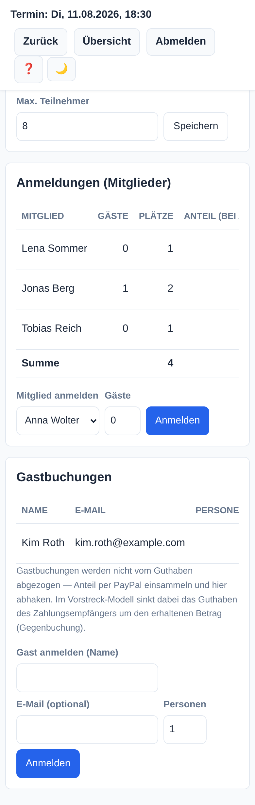
Der SportAbo Manager hat keine Passwörter. Du gibst deine E-Mail-Adresse ein und bekommst eine Mail mit einem Anmelde-Link und einem 6-stelligen Code. Beides ist 15 Minuten gültig. Der Link funktioniert per Klick; den Code kannst du eintippen, wenn du die Mail auf einem anderen Gerät liest.
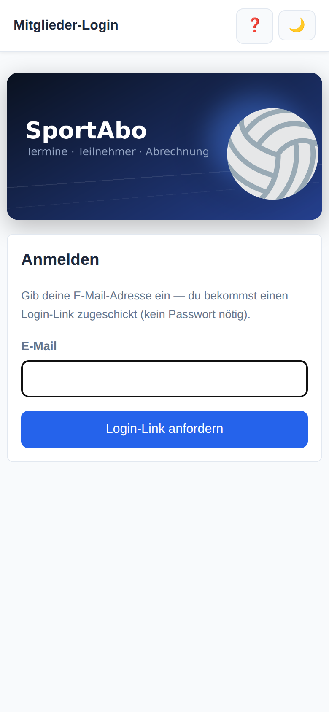
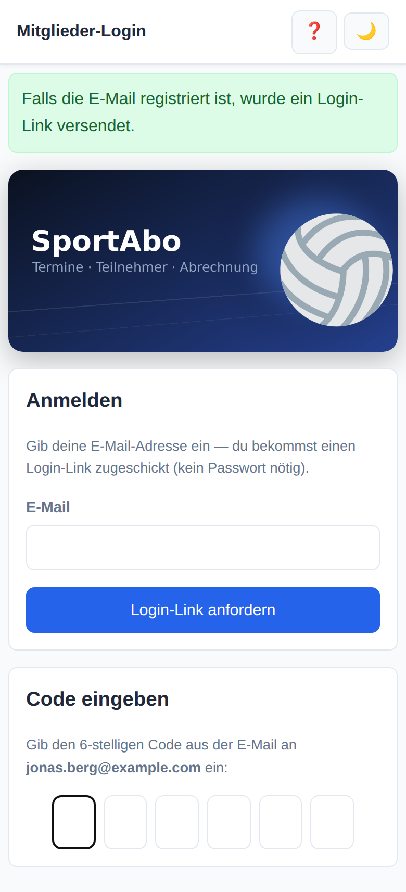
Du bleibst dauerhaft angemeldet, solange du das Gerät regelmäßig benutzt — du musst dir also nicht bei jedem Besuch einen neuen Link schicken lassen.
Der SportAbo Manager lässt sich wie eine richtige App auf dem Startbildschirm ablegen. Sie startet dann im Vollbild mit eigenem Symbol, ohne Adressleiste und Browser-Tabs. Es wird nichts installiert und nichts aus einem App-Store geladen — es ist dieselbe Seite, nur ohne Drumherum.
Oft blendet Chrome von selbst einen Streifen mit dem Vorschlag „App installieren“ ein — ein Tipp darauf genügt dann.
Nach dem Anmelden landest du auf deinem Dashboard. Unten am Bildschirmrand liegt die Navigation mit drei Bereichen: 📅 Termine, ✅ Meine und 💶 Konto.
Hier stehen alle kommenden Termine. Jede Karte zeigt Datum, Uhrzeit, freie Plätze, den Maximalpreis pro Person und deinen Status.
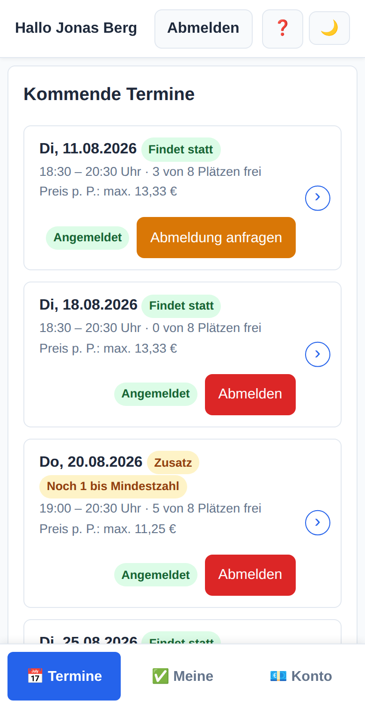
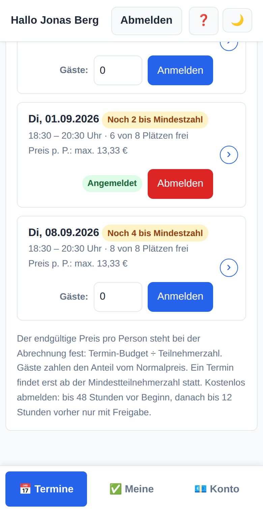
Die farbigen Markierungen bedeuten:
| Markierung | Bedeutung |
|---|---|
| Findet statt | Die Mindestteilnehmerzahl ist erreicht. |
| Noch N bis Mindestzahl | Es fehlen noch N Anmeldungen, damit der Termin stattfindet. |
| Angemeldet | Du bist dabei. |
| Ausgebucht | Keine Plätze mehr frei — du kannst auf die Warteliste. |
| Zusatz | Ein Zusatztermin außerhalb des Abo-Preises (eigene Kosten, alle zahlen gleich viel). |
| Storno angefragt | Deine Abmeldung wartet auf Freigabe durch ein Super-Mitglied. |
Im Feld Gäste neben dem Anmelde-Button trägst du ein, wie viele Leute du mitbringst. Sie belegen zusätzliche Plätze, und ihr Anteil wird dir in Rechnung gestellt — du bekommst also die Kosten für dich plus deine Gäste abgezogen. Gäste zahlen dabei den (höheren) Gast-Anteil.
Wie du dich abmelden kannst, hängt davon ab, wie nah der Termin ist:
| Zeitpunkt | Was passiert |
|---|---|
| Früh genug | Button Abmelden — du meldest dich sofort selbst ab. Ein Platz wird frei und rückt ggf. jemanden von der Warteliste nach. |
| Kurzfristig | Button Abmeldung anfragen — es wird eine Anfrage erstellt, die ein Super-Mitglied freigeben oder ablehnen muss. Die Super-Mitglieder bekommen sofort eine Mail. |
| Zu spät | Keine Abmeldung mehr möglich. Der Termin wird dir berechnet, auch wenn du nicht kommst. |
Die konkreten Stundenwerte legt der Admin pro Abo fest; sie stehen als Hinweistext unter der Terminliste.
Ist ein Termin ausgebucht, kannst du dich auf die Warteliste setzen. Sie funktioniert nach dem Prinzip „wer zuerst kommt“: Wird ein Platz frei, rückst du automatisch nach, wirst fest angemeldet und bekommst eine E-Mail. Wenn du dann doch nicht kannst, musst du dich normal wieder abmelden. Gäste kannst du über die Warteliste nicht mitanmelden.
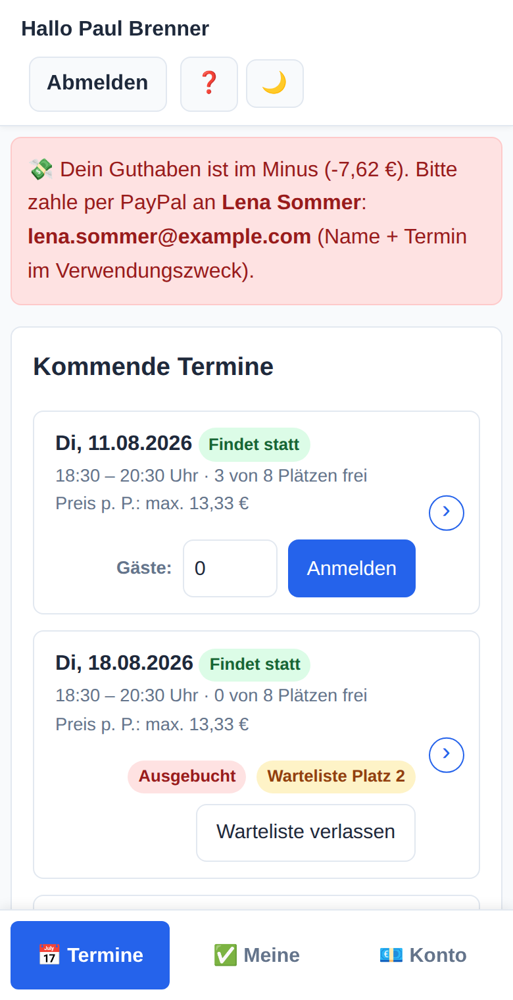
Eine Übersicht aller deiner Anmeldungen mit Status sowie die vergangenen Termine mit deinem jeweiligen Anteil.
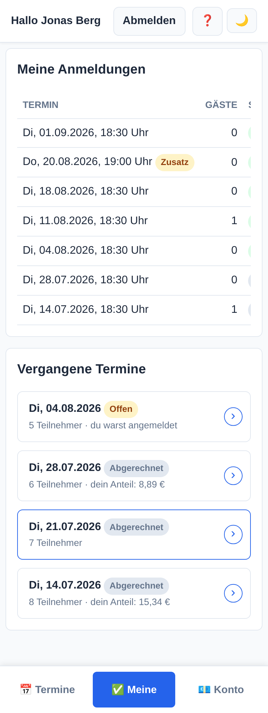
Oben stehen dein aktuelles Guthaben, die Summe deiner bisherigen Ausgaben und die Zahl deiner Anmeldungen. Darunter der Kontoauszug mit jeder einzelnen Buchung.
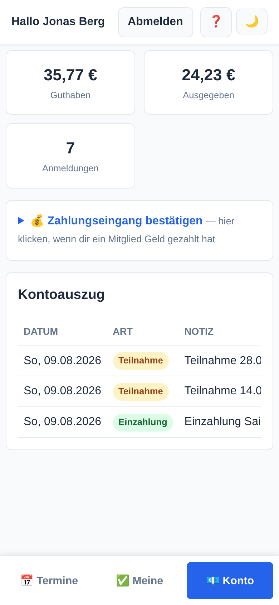
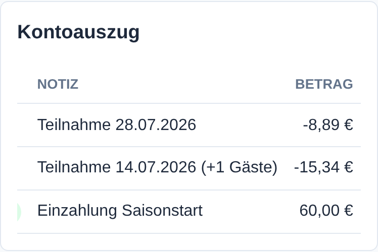
Hat dir jemand Geld gegeben — per PayPal, bar, überwiesen —, bestätigst du den Eingang selbst: Zahler auswählen, Betrag eintragen, fertig. Das Guthaben des Zahlers steigt, deines sinkt um denselben Betrag.
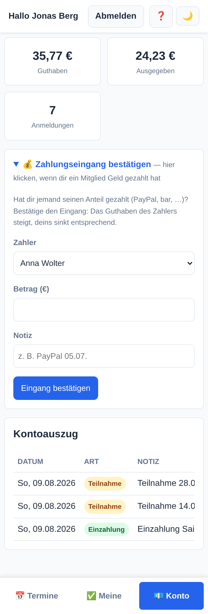
Tippst du eine Terminkarte an, siehst du, wer sonst noch dabei ist, wie viele Plätze belegt sind und — nach der Abrechnung — deinen Anteil.
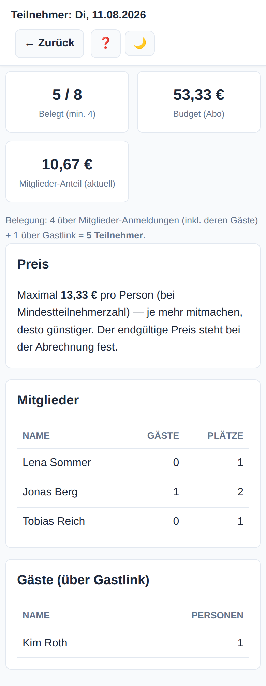
Bist du mit derselben E-Mail-Adresse in mehreren Abos Mitglied, erscheint oben auf dem Dashboard ein Umschalter. Ein Klick wechselt das Abo, ohne dass du dich neu anmelden musst.
Super-Mitglieder sind normale Mitglieder mit Zusatzrechten — gedacht für die Person, die die Gruppe organisiert. Sie erkennst du am ⭐ neben deinem Namen und am zusätzlichen Bereich ⚙️ Verwaltung in der Navigation. Alle Rechte gelten nur für das eigene Abo.
Während normale Mitglieder nur den Maximalpreis sehen, zeigt die App Super-Mitgliedern die komplette Staffel: was der Termin bei 4, 5, 6 … Teilnehmern pro Person kostet.
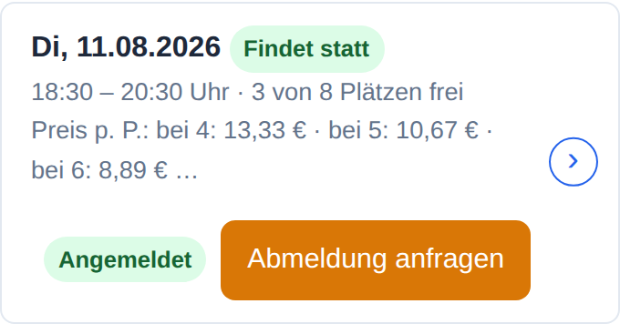
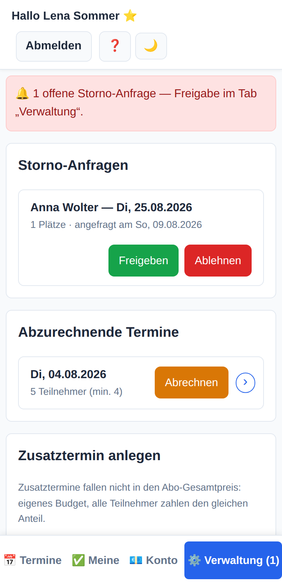
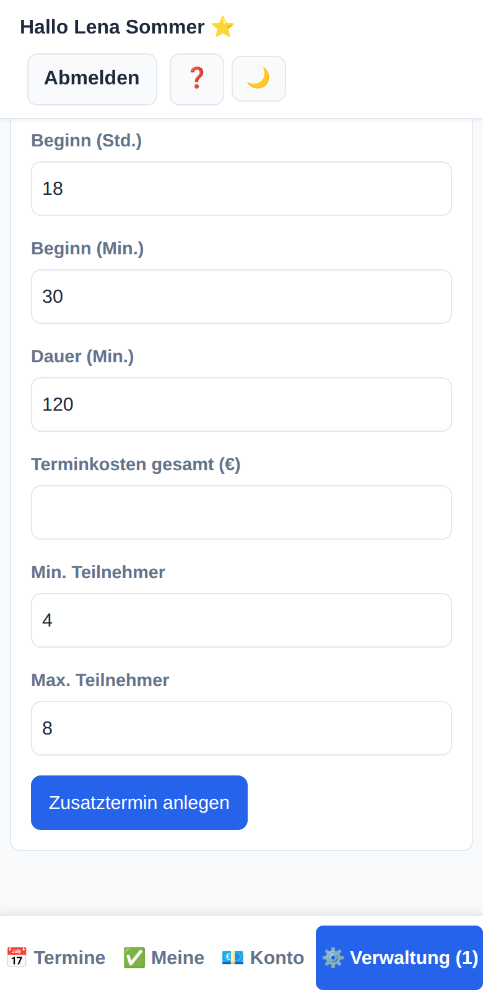
Meldet sich jemand nach Ablauf der freien Frist ab, landet die Anfrage hier — und du bekommst eine E-Mail. Freigeben löscht die Anmeldung (und rückt jemanden von der Warteliste nach), Ablehnen lässt sie bestehen; die Person zahlt dann mit.
Nach dem Termin klickst du Abrechnen. Damit wird der Anteil für alle festgeschrieben: Jedem angemeldeten Mitglied wird sein Anteil (plus der seiner Gäste) vom Guthaben abgezogen, und alle Beteiligten bekommen eine Abrechnungsmail.
Beim Absagen eines regulären Termins musst du entscheiden, was mit dem Geld passiert:
| Option | Wirkung | Wann sinnvoll |
|---|---|---|
| Absagen + Preis reduzieren | Der Gesamtpreis des Abos sinkt um das Budget dieses Termins. Die übrigen Termine bleiben gleich teuer. | Wenn der Termin ersatzlos ausfällt und ihr dafür auch nichts zahlen müsst. |
| Absagen + umlegen | Der Gesamtpreis bleibt, das Budget verteilt sich auf die verbleibenden Termine — die werden also teurer. | Wenn die Platzmiete trotzdem fällig wird, z. B. bei kurzfristiger Absage wegen Wetter. |
Ein Zusatztermin liegt außerhalb des Abo-Gesamtpreises: Er bekommt sein eigenes Budget, und alle Teilnehmer zahlen denselben Anteil — auch Gäste. Du gibst Datum, Uhrzeit, Dauer, die Gesamtkosten des Termins und die Teilnehmergrenzen an. Praktisch für ein spontanes Zusatzspiel oder ein Turnier.
Super-Mitglieder sehen zu jedem Termin die volle Teilnehmerliste — inklusive der Gäste, die über den öffentlichen Link gebucht haben.
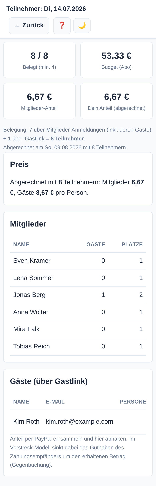
Link-Gäste haben kein Guthabenkonto — ihr Anteil wird nicht verrechnet, sondern per PayPal eingesammelt. Sobald das Geld da ist, hakst du den Gast in der Liste ab. Im Vorstrecker-Modus sinkt dabei automatisch das Guthaben der Person, die das Geld bekommen hat.
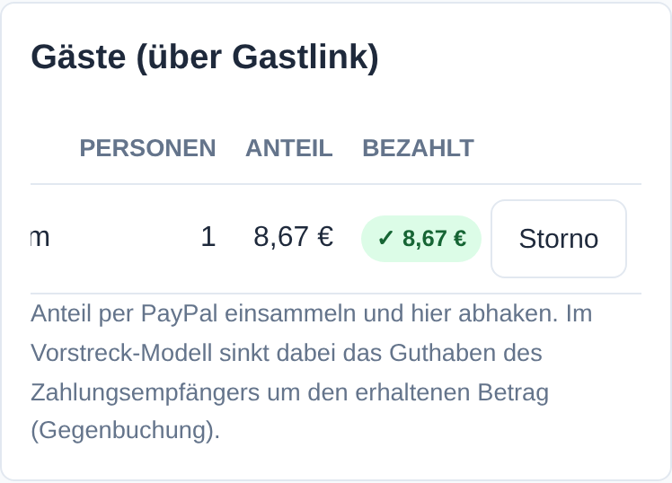
Gäste brauchen weder Konto noch Anmeldung. Ein Mitglied schickt dir einen Link zu einem bestimmten Termin — den öffnest du und buchst direkt.
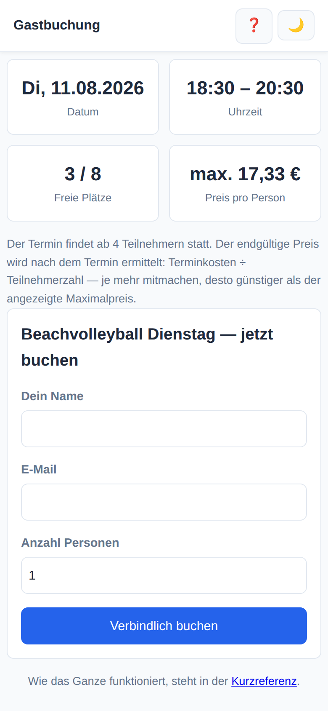
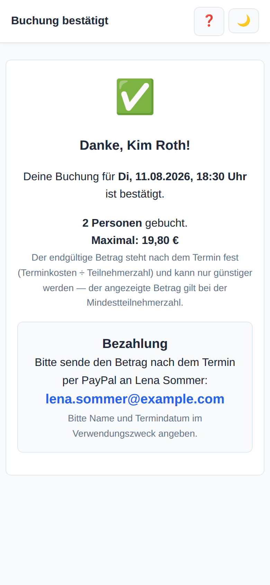
Der SportAbo Manager verschickt sieben verschiedene E-Mails. Alle kommen vom selben Absender und nennen im Betreff das Abo und das Datum.
| Wann | An wen | Was du tun musst | |
|---|---|---|---|
| Dein Anmelde-Link | Sofort, wenn du auf der Login-Seite deine E-Mail eingibst. | Mitglied | Link anklicken oder den 6-stelligen Code eingeben. Beides ist 15 Minuten gültig. |
| Erinnerung: Abmeldefrist | Einen Tag bevor die kostenlose Abmeldung endet. | Angemeldete Mitglieder | Nur handeln, wenn du nicht kommen kannst — dann jetzt abmelden, solange es noch frei geht. |
| Erinnerung: Termin | Zum selben Zeitpunkt. | Gäste mit E-Mail-Adresse | Wenn du nicht kannst: dem Organisator Bescheid geben (online geht es nicht). |
| Nachgerückt | Sobald auf einem ausgebuchten Termin ein Platz frei wird und du oben auf der Warteliste stehst. | Mitglied auf der Warteliste | Nichts — du bist automatisch fest angemeldet. Wenn du doch nicht kannst, melde dich ab. |
| Storno-Anfrage | Wenn sich jemand nach Ablauf der freien Frist abmelden will. | Super-Mitglieder | Im Verwaltungsbereich freigeben oder ablehnen. |
| Abrechnung | Wenn ein Termin abgerechnet wurde. | Angemeldete Mitglieder | Enthält deinen Anteil und dein neues Guthaben. Bei negativem Guthaben an die genannte Adresse zahlen. |
| Abrechnung (Gast) | Ebenfalls bei der Abrechnung. | Gäste mit E-Mail, die noch nicht bezahlt haben | Den genannten Betrag per PayPal zahlen, Name und Termin im Verwendungszweck. |
| Ich will … | Wo |
|---|---|
| mich für einen Termin anmelden | 📅 Termine → Anmelden |
| Gäste mitbringen | 📅 Termine → Feld Gäste vor dem Anmelden ausfüllen |
| mich abmelden | 📅 Termine → Abmelden bzw. Abmeldung anfragen |
| auf die Warteliste | 📅 Termine → Auf die Warteliste bei ausgebuchten Terminen |
| sehen, wer dabei ist | Terminkarte antippen |
| mein Guthaben prüfen | 💶 Konto |
| die App auf den Startbildschirm legen | Android: Chrome-Menü ⋮ → App installieren · iPhone: Safari → Teilen-Symbol → Zum Home-Bildschirm |
| eine erhaltene Zahlung bestätigen | 💶 Konto → Zahlungseingang bestätigen |
| einen Termin abrechnen ⭐ | ⚙️ Verwaltung → Abrechnen |
| eine Storno-Anfrage bearbeiten ⭐ | ⚙️ Verwaltung → Freigeben / Ablehnen |
| einen Zusatztermin anlegen ⭐ | ⚙️ Verwaltung → Zusatztermin anlegen |
| eine Gastzahlung abhaken ⭐ | Terminkarte antippen → Gästeliste → Bezahlt |